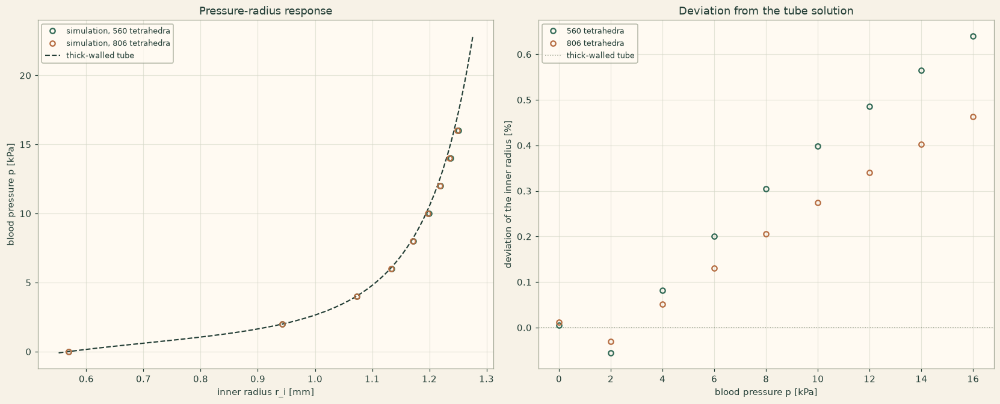
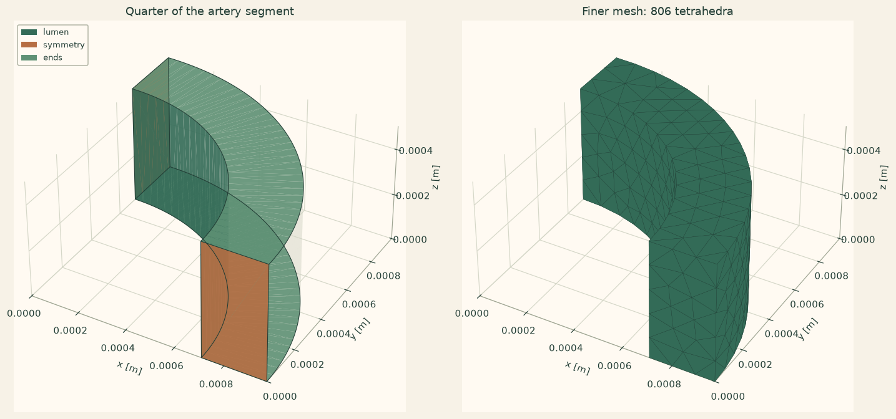

Docs › Examples › Inflation of an artery wall
Soft tissue mechanics · 3D
Inflation of an artery wall
A segment of arterial media, reinforced by two helical families of collagen fibres, is stretched axially and inflated by the blood pressure.

What it computes
OneSimulation reads a quarter of the segment from a STEP file, meshes it with tetrahedra and solves 3D finite-strain equilibrium of the nearly incompressible Holzapfel-Gasser-Ogden material, with the fibre directions given as a field around the vessel axis and the blood pressure following the deformed wall; two meshes are compared. The script that builds the STEP file comes with the notebook.
What it checks
The pressure-radius curve up to 16 kPa follows the semi-analytical thick-walled tube solution with the parameters of Holzapfel, Gasser and Ogden (2000): the inner radius deviates by at most 0.64 % on the coarse and 0.46 % on the fine mesh, which in the steep collagen-dominated range corresponds to 8.7 % and 6.2 % in pressure.
Geometry
The notebook starts at the import of the CAD file arterial_wall_inflation.step: STEP (AP242), readable by any CAD program, with the names of the faces that the boundary conditions use. Put it next to the notebook.

The geometry script
The script arterial_wall_inflation_geometry.py builds the geometry with the CAD objects of OneSimulation and writes the file. Change a dimension there, run it, and run the notebook again.
"""Geometry of the OneSimulation example "Inflation of an artery wall with collagen fibres".
Builds a quarter of a tube segment of the arterial media with the CAD objects of OneSimulation:
inner radius 0.71 mm, wall thickness 0.26 mm, length 0.5 mm. The part is written to
arterial_wall_inflation.step with the faces lumen (inner wall), adventitia (outer wall),
plane_x (x = 0), plane_y (y = 0), bottom (z = 0) and top (z = length).
"""
from onesim.cad.d3 import AnnularCylinder, Box
inner, wall, length = 0.71e-3, 0.26e-3, 0.5e-3
tube = AnnularCylinder(
inner_radius=inner, outer_radius=inner + wall, length=length
) & Box(length=2e-3, width=2e-3, height=2 * length, origin=(0.0, 0.0, -length / 2))
tube = tube.grouped(
lumen=tube.select(
faces=lambda face: face.kind == "cylinder"
and abs(face.center[0] ** 2 + face.center[1] ** 2) < (inner + wall / 2) ** 2
),
adventitia=tube.select(
faces=lambda face: face.kind == "cylinder"
and abs(face.center[0] ** 2 + face.center[1] ** 2) > (inner + wall / 2) ** 2
),
plane_x=tube.select(
faces=lambda face: face.kind == "plane" and abs(face.center[0]) < 1e-12
),
plane_y=tube.select(
faces=lambda face: face.kind == "plane" and abs(face.center[1]) < 1e-12
),
bottom=tube.select(
faces=lambda face: face.kind == "plane" and abs(face.center[2]) < 1e-12
),
top=tube.select(
faces=lambda face: face.kind == "plane" and abs(face.center[2] - length) < 1e-12
),
)
tube.save("arterial_wall_inflation.step")The notebook
The complete notebook, cell by cell. Run it to produce the figures and the comparison printout.
The wall of an artery is a fibre-reinforced soft tissue. At low pressure the soft elastin matrix carries the load and the artery is compliant; as the vessel widens, the wavy collagen fibres, wound helically around it, straighten and the wall stiffens sharply. This protects the vessel against overdistension and is the typical J-shaped response of soft tissue.
The model of G.A. Holzapfel, T.C. Gasser and R.W. Ogden (J. Elasticity 61, 2000, 1-48) adds to a neo-Hookean matrix two fibre families at the angles \(\pm\beta\) to the circumferential direction:
with \(\bar I_{4,6}=\mathbf a_{4,6}\cdot\bar{\mathbf C}\mathbf a_{4,6}\), the squared stretch of each fibre family; fibres only carry load when stretched, \(\bar I_i>1\).
Setup. The media of a rabbit carotid artery with the parameters of Holzapfel, Gasser and Ogden (2000): \(\mu=3.0\) kPa, \(k_1=2.3632\) kPa, \(k_2=0.8393\), \(\beta=29°\); unloaded inner radius 0.71 mm, wall thickness 0.26 mm. The adventitia and residual stresses are left out. The segment is first stretched axially by \(\lambda_z=1.5\), then inflated to 16 kPa (120 mmHg). A quarter of a 0.5 mm long segment comes from the CAD file arterial_wall_inflation.step, written by arterial_wall_inflation_geometry.py with the CAD objects of OneSimulation.
| face | condition | |---|---| | lumen | blood pressure \(p\), following the deformed wall | | adventitia | free | | plane_x, plane_y | symmetry | | bottom, top | axial displacement \(0\) and \((\lambda_z-1)L\), free radially |
Reference. With smooth ends the tube deforms uniformly along its axis. For the incompressible material the radius \(R\) maps to \(r^2=r_i^2+(R^2-R_i^2)/\lambda_z\), and the radial equilibrium integrates to the pressure for a given inner radius \(r_i\) (e.g. Holzapfel et al. 2000, Sec. 5):
with \(\lambda_\theta=r/R\), \(\lambda_r=1/(\lambda_\theta\lambda_z)\) and \(I_4=\lambda_\theta^2\cos^2\beta+\lambda_z^2\sin^2\beta\).
import numpy as np
from onesim.cad.exchange import load
from onesim.meshing import TetrahedralMesher
from onesim.physics.biophysics import ContinuumTissue, FiberReinforcedTissue, TissueFiberFamily
from onesim.visualization import theme, plots
theme.set()Geometry and mesh
load returns the quarter segment with its named faces; two tetrahedral meshes, 0.15 mm and 0.1 mm.
segment = load("arterial_wall_inflation.step")
faces = segment.boundaries
inner, wall, length = 0.71e-3, 0.26e-3, segment.size[2]
sizes = [0.15e-3, 0.10e-3]
meshes = [TetrahedralMesher(target_size=size).generate(segment) for size in sizes]
view = plots.Camera(elevation=35, azimuth=-60)
fig = plots.figure(1, 2, size=(13, 6))
plots.geometry(segment, selection={"lumen": faces.lumen, "symmetry": faces.plane_x | faces.plane_y, "ends": faces.bottom | faces.top},
labels=False, camera=view, title="Quarter of the artery segment", ax=fig[0])
plots.mesh(meshes[-1], groups=("all",), legend=False, camera=view, title=f"Finer mesh: {meshes[-1].cell_count} tetrahedra", ax=fig[1])
plots.show()Model
Each fibre family is a direction field: \(\cos\beta\,\mathbf e_\theta\pm\sin\beta\,\mathbf e_z\) at every point of the wall. The bulk modulus is \(10^4\) times the shear modulus. Two steps stretch the segment, eight raise the pressure.
shear, stiffness, exponent, angle, axial = 3.0e3, 2.3632e3, 0.8393, np.radians(29.0), 1.5
helix = lambda sign: TissueFiberFamily(stiffness=stiffness, exponent=exponent, direction=lambda x, y, z: np.stack(
(-np.cos(angle) * y / np.hypot(x, y), np.cos(angle) * x / np.hypot(x, y), sign * np.sin(angle) * np.ones_like(x)), axis=-1))
media = ContinuumTissue(material=FiberReinforcedTissue(shear_modulus=shear, bulk_modulus=1e4 * shear, fibers=(helix(1), helix(-1))))
times = np.r_[0.0, 0.1, np.linspace(0.2, 1.0, 9)]
blood_pressure = lambda t: 16e3 * max(0.0, (t - 0.2) / 0.8)
results = [media.solve(mesh=mesh, times=times, quadrature_order=3, pressures=((faces.lumen, blood_pressure),),
displacements=((faces.plane_x, "x", 0.0), (faces.plane_y, "y", 0.0), (faces.bottom, "z", 0.0),
(faces.top, "z", lambda t: (axial - 1) * length * min(1.0, t / 0.2))))
for mesh in meshes]
nodes = [int(np.argmin(np.linalg.norm(result.displacement_space.dof_coordinates - (inner, 0.0, length / 2), axis=1))) for result in results]
radius = [inner + result.displacement[2:, node, 0] for result, node in zip(results, nodes)]
pressure = np.array([blood_pressure(t) for t in times[2:]])Reference: the thick-walled tube
The pressure for a given inner radius, integrated over the wall.
def tube_pressure(r_inner):
"""Inflation pressure of the incompressible HGO tube at the deformed inner radius."""
R = np.linspace(inner, inner + wall, 400)
r = np.sqrt(r_inner**2 + (R**2 - inner**2) / axial)
hoop, radial = r / R, R / (r * axial)
fibre = np.maximum(hoop**2 * np.cos(angle) ** 2 + axial**2 * np.sin(angle) ** 2 - 1, 0.0)
difference = shear * (hoop**2 - radial**2) + 4 * stiffness * fibre * np.exp(exponent * fibre**2) * hoop**2 * np.cos(angle) ** 2
return np.trapezoid(difference * R / (axial * r**2), R)Comparison with the reference
The reference pressure at each computed inner radius against the applied pressure, and the inner radius of the reference at the applied pressure against the computed one. Because the collagen stiffens the wall steeply, a small error in the radius is a large one in the pressure.
line = np.linspace(0.97 * radius[-1][0], 1.02 * max(values.max() for values in radius), 300)
reference_radius = np.interp(pressure, np.array([tube_pressure(r) for r in line]), line)
print(f"{'pressure [kPa]':>14s}" + "".join(f" {f'r_i, {mesh.cell_count} tets [mm]':>22s} {'p_ref [kPa]':>11s}" for mesh in meshes))
for k, p in enumerate(pressure):
print(f"{p / 1e3:14.2f}" + "".join(f" {1e3 * values[k]:22.4f} {tube_pressure(values[k]) / 1e3:11.3f}" for values in radius))
print("largest deviation of the inner radius from the reference: "
+ ", ".join(f"{100 * np.abs(values / reference_radius - 1).max():.2f} % ({mesh.cell_count} tetrahedra)" for mesh, values in zip(meshes, radius)))
print("largest deviation of the pressure from the reference, relative to 16 kPa: "
+ ", ".join(f"{100 * max(abs(tube_pressure(r) - p) for r, p in zip(values, pressure)) / 16e3:.2f} % ({mesh.cell_count} tetrahedra)"
for mesh, values in zip(meshes, radius)))Figure
The pressure-radius curve of both meshes with the thick-walled tube solution, and the deviation of the computed inner radius from it.
fig = plots.figure(1, 2, size=(15, 6))
plots.line(points={f"simulation, {mesh.cell_count} tetrahedra": (1e3 * values, pressure / 1e3) for mesh, values in zip(meshes, radius)},
reference={"thick-walled tube": (1e3 * line, np.array([tube_pressure(r) for r in line]) / 1e3)},
xlabel="inner radius r_i [mm]", ylabel="blood pressure p [kPa]", title="Pressure-radius response", legend="upper left", ax=fig[0])
plots.line(points={f"{mesh.cell_count} tetrahedra": (pressure / 1e3, 100 * (values / reference_radius - 1)) for mesh, values in zip(meshes, radius)},
hlines={"thick-walled tube": 0.0}, markers=True, xlabel="blood pressure p [kPa]", ylabel="deviation of the inner radius [%]",
title="Deviation from the tube solution", legend="upper left", ax=fig[1])
plots.show()Going further
Add the adventitia as a second layer with its own parameters (\(\mu=0.3\) kPa, \(k_1=0.562\) kPa, \(k_2=0.7112\), \(\beta=62°\) in the same paper), or turn the fibres more axially and watch the stiffening move to larger radii. Fibre dispersion is a parameter of each family.